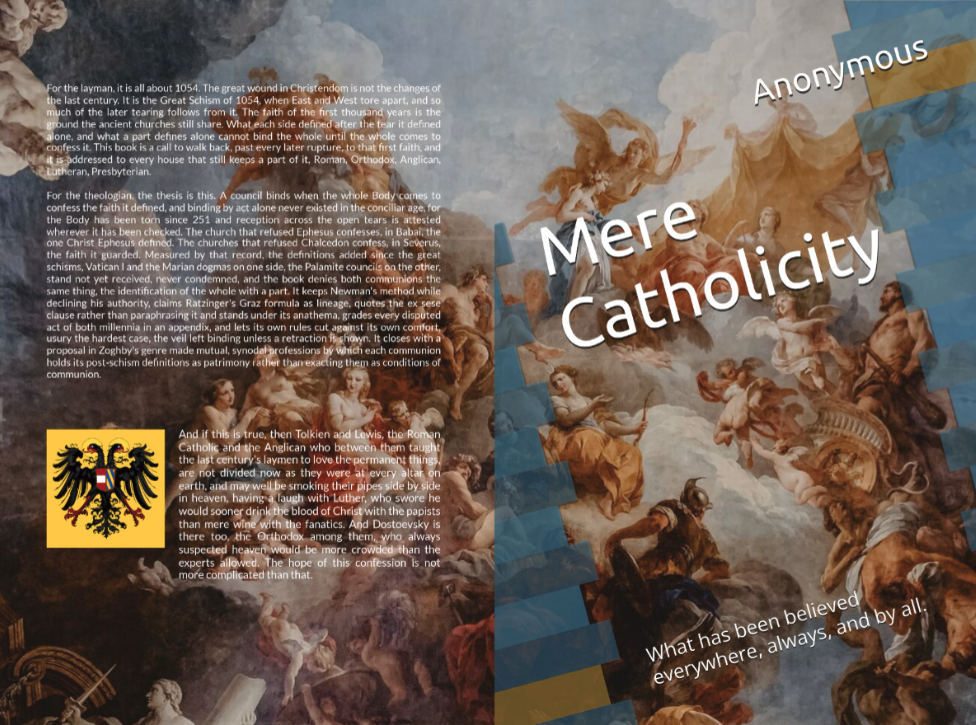

What has been believed everywhere, always, and by all.

This work is dedicated to the public domain (Creative Commons CC0 1.0). No rights reserved.
It may be copied, translated, printed, and distributed freely, by anyone, for any purpose.
The Mere Catholicity papers assume a theological formation, a reader at home with Newman's Essay on the Development of Christian Doctrine, the councils, and the long quarrel over the primacy. If that is you, start there and argue with them. The Sources page holds the primary texts, Newman included.
Everyone else, start with the two plain pages. The Credo states what we confess and why, clause by clause, in ordinary language. Lex orandi answers the practical questions, where one may worship, how to pray at home, how to learn the faith. The book is the full case.
And if this is true, then Tolkien and Lewis, the Roman Catholic and the Anglican who between them taught the last century's laymen to love the permanent things, are not divided now as they were at every altar on earth, and may well be smoking their pipes side by side in heaven, having a laugh with Luther, who swore he would sooner drink the blood of Christ with the papists than mere wine with the fanatics. And Dostoevsky is there too, the Orthodox among them, who always suspected heaven would be more crowded than the experts allowed. The hope of this confession is not more complicated than that.
from the afterword
We are Roman Catholics arguing that the Christian Church is larger than the Roman communion. Catholic means according to the whole, and in the Church a council's authority is completed by reception, by what the whole body of believers comes to confess. The whole body received the Scriptures, the Nicene Creed, and the seven ecumenical councils in the first thousand years, before the Great Schism of 1054 divided East from West and centuries before the Reformation. That simple Catholic faith is the ground the ancient churches still share.
So much of the later division follows from 1054. Rome and the East broke communion, and after that each side went on alone, popes and councils declaring new dogmas as binding on the consciences of all. But since the schism the Roman church and the Eastern church are each one part of a divided whole, and what one part declares on its own authority cannot bind the whole Church until the whole body of believers receives it. The book therefore argues for walking the second millennium back, declining Vatican I, the Marian definitions, and the finality of Trent's anathemas for Rome, and the Palamite councils for the East. Declined, in the book's sense, means not yet received by the whole worldwide body of Christ, for since the Great Schism it cannot be, and therefore the post-1054 judgments of popes and councils cannot bind the worldwide body of Christ or the consciences of men.
The walking back has already begun. Rome has reversed her own rigor since the Second Vatican Council, corrected the coercion of conscience, prayed in the assemblies she once forbade, and even honored Luther with a statue in the Vatican, an act the book weighs rather than cheers. The communions are asked to finish the work, to stop damning one another over the disputed definitions, to talk as brothers again, and to leave the verdict to the reception of the whole, the only judge the book acknowledges, rendered not by decree but as confession spreads or does not. Rome would regain credibility if she asked of communion no more than the first millennium asked.
This makes for a conservative ecumenism. The Orthodox, the Anglican, the Lutheran, the Presbyterian who keep that faith are brothers, united around the same Bible and the same Nicene Creed, older than the Great Schism, older than the Reformation. It is a faith with room for J.R.R. Tolkien, C.S. Lewis, Martin Luther, Dostoevsky, and maybe even John Calvin. It is Augustine and Jerome, Chrysostom and Athanasius. It is one holy catholic and apostolic Church.
Lewis called the faith all Christians share mere Christianity, writing at a popular level, and we commend his book. Ours borrows his word and presses the question further: what Christians share is larger than Lewis claimed, not a hallway of doctrines only but a Church, with a creed, councils, sacraments, and bishops, held in common for a thousand years. It points a direction for Roman Catholics, the Eastern Orthodox, and Protestants to reunite as one body around the faith they all inherit from the first millennium. It shows at a high and technical level how that is possible, and what is truly required of every party to heal the schisms worldwide.
Quod ubique, quod semper, quod ab omnibus.